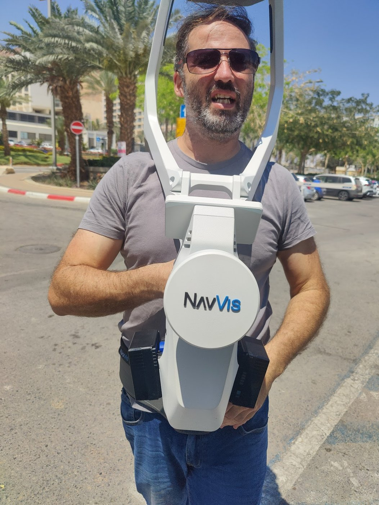

מקושר לרשת הארצית9+ שנות ניסיוןפריסה ארציתתשלום רק אחרי ההגעה לנכס
מפה טופוגרפית להיתר
מהי מפה טופוגרפית / מצבית
התנאי המקדים להיתר בנייה
מיפוי מדויק של פני השטח - גבהים, קווי גובה, עצים, מבנים, גבולות ותשתיות. מפה טופוגרפית (הנקראת גם מפה מצבית) נדרשת לרוב כתנאי מקדים להגשת בקשה להיתר בנייה, ומהווה את התשתית המדויקת לתכנון. אנחנו מבצעים את מדידת הבסיס - מדידה גאודטית מדויקת וסריקת לייזר תלת-מימדית של המגרש והסביבה - ומפיקים קובץ DWG מהונדס, מקושר לרשת הקואורדינטות הארצית. במקרים שבהם נדרשת חתימה רשמית של מודד מוסמך להגשה לוועדה, העבודה מתבצעת בתיאום מלא עם מודד מוסמך.
אותה מפה מצבית שהוועדות מכירות ודורשות - רק מבוססת על כיסוי מלא של המגרש ועל נתונים מדויקים יותר. פחות הפתעות בשטח, פחות סבבי תיקונים מול הוועדה.
כיסוי מלא של המגרש
הסריקה לוכדת את כל השטח בבת אחת - גבהים, גבולות, עצים ותשתיות - בלי נקודות שנשכחו ובלי חזרות מיותרות לשטח.
דיוק מוחלט
מדידה גאודטית מקושרת לרשת הקואורדינטות הארצית, בשילוב סריקת לייזר עד ±6 מ"מ ברמת הפרטים - נתוני אמת לתכנון.
מסירה מהירה
קובץ DWG מהונדס ומדויק מגיע אליכם תוך מס' ימים בלבד מיום המדידה, בפריסה ארצית מלאה.
בסיס אמין לתכנון
האדריכל מתכנן על מפה עדכנית ומדויקת - פחות חריגות, פחות סירובים מהוועדה ופחות תיקונים יקרים בהמשך.
התוצרים
מה אתם מקבלים ממדידת מגרש אחת
מפה מצבית מלאה, בפורמט הנדסי, מוכנה לצירוף לבקשת ההיתר - וכל הנתונים שמאחוריה, למקרה שתצטרכו אותם.
DWG / TOPO
מפה טופוגרפית בקובץ DWG
מפה מצבית מלאה בפורמט הנדסי, מוכנה לצירוף לתכנון ולהגשה לוועדה.
.DWG · .DXF
LEVELS
מדידת גבהים וקווי גובה
קווי גובה ונקודות גובה מדויקים שמתארים את פני הקרקע והשיפועים במגרש.
PDF · דוח מדידה
INFRA
מיפוי תשתיות וסביבה
שוחות, תאי ביקורת, עמודי חשמל ותאורה, כבישים ומדרכות - כל תשתית גלויה במגרש ובסביבתו.
DWG · PDF
BOUNDARY
גבולות מגרש
הגבולות הרשומים של החלקה ביחס למגרשים הסמוכים, כפי שנמדדו בשטח.
DWG · נסח טאבו
ITM GRID
קישור לרשת הקואורדינטות הארצית
לכל נקודה במפה מיקום מוחלט וגובה מדויק, מקושרים לרשת הארצית הרשמית.
ITM · רשת ארצית
POINT CLOUD
ענן נקודות תלת-מימדי
הסריקה הגולמית המלאה של המגרש והסביבה - לשילוב בכל תוכנת תכנון או GIS.
E57 · RCP · LAS

מדידה גאודטית בשטח
איך המפה נמדדת בפועל
מדידה גאודטית וסריקת לייזר, יחד
מפה מצבית מודרנית נבנית משילוב של מדידה גאודטית מדויקת - שקושרת את המגרש לרשת הקואורדינטות הארצית - לבין סריקת לייזר תלת-מימדית שממלאת את הפרטים. סורק לייזר נייד לוכד את השטח, המבנים והתשתיות בצפיפות גבוהה, ומייצר ענן נקודות מדויק שממנו מפיקים את המפה, במקום למדוד נקודות בודדות אחת-אחת.
קווי גובה ונקודות גובה מדויקות המאפשרות חישוב חתכים וכמויות עפר לפני עבודות פיתוח.
תכנון תשתיות ניקוז
מיפוי שיפועים ותשתיות קיימות כבסיס לתכנון ניקוז נכון ומניעת בעיות ניקוז עתידיות.
מדידת מגרש לפני רכישה או תכנון
בדיקת גבולות, שטח ושיפועי המגרש בפועל - נתוני אמת לפני קבלת החלטה או תחילת תכנון.
הטכנולוגיה שמאחורי הדיוק
סורק לייזר אחד. ענן נקודות מלא של כל מבנה.
בלב מקובקי שירותי מדידה עומד סורק לייזר תלת-מימדי נייד מהמתקדמים בעולם. הוא יורה 1,200,000 קרני לייזר בשנייה, לוכד כל קיר, פתח וזווית תוך דקות - ומצלם את החלל ב-360° לתיעוד ויזואלי מלא.
1,200,000 קרני לייזר בשנייהאיסוף נתונים בזמן אמת, בהליכה רציפה
דיוק עד ±6 מ"מללא סטיות של מדידה ידנית
120 מ"ר ב-6 דקותסריקה מלאה של קומה, בלי לשבש שגרה
4 מצלמות HDתיעוד צבע וסיור 360° מלא
ביקורות מ-Google
לקוחות שכבר עובדים איתנו
5.0★★★★★ביקורות אמיתיות מלקוחות מרוצים
א
אורלי ט׳אדריכלית
★★★★★
כאדריכלית נדרשתי להשתמש בשירותי מדידות לצורך הגשה להיתר. הגעתי לעודד ומיד הבנתי שמדובר באדם מקסים, אדיב, שירותי, שעובד בצורה מקצועית וענה על כל הדרישות. ממליצה מאוד מאוד.
N
Nina Gמעצבת פנים
★★★★★
כל פרוייקט קטן כגדול מתחיל במדידה מקצועית. כבר שנים שאני עובדת מול עודד ומרוצה תמיד מהתהליך. המדידה לוקחת עשר-עשרים דקות ותוך ימים ספורים אני כבר מקבלת את הקבצים באיזה פורמט שאבחר: רוויט, אוטוקאד, סקטצ' אפ וכמובן עם סיור וירטואלי של הדירה שחוסך ללקוח שלי זמן הגעה לשטח. ממליצה.
ד
דנה פינגררמעצבת פנים
★★★★★
אני עובדת עם עודד מספר שנים ותמיד מרוצה מתוכניות המדידות שהוא מבצע. זהו שלב סופר חשוב בתהליך התכנון מכיוון שעליו מתבססות כל התוכניות. העבודה עם עודד תמיד נעימה, הוא שירותי ויעיל והתוצרים מתקבלים במהירות. ממליצה בחום.
ד
דנה נ׳מעצבת פנים
★★★★★
אני עובדת עם עודד שנים כמעצבת פנים. מעבר לזה שהוא מקסים ומאוד שירותי, המדידות תמיד יוצאות הכי מדויקות וכל התהליך לוקח כמה דקות. הסיור הווירטואלי שעודד מוסיף מאוד עוזר בשלב השיפוץ והתכנון. עבדתי בעבר עם מודדים אחרים, והיום עודד הוא המודד היחיד שאני עובדת איתו.
ד
דני עיצוב רהיטיםלקוח מרוצה
★★★★★
עודד ביצע עבור לקוחות שלי מדידה ואין כמוהו. החומר והשרטוטים הגיעו במקצועיות. מובנים ונוחים לעבודה. ממליצה מאד.
ש
שירלי צ׳מעצבת פנים
★★★★★
עודד המודד התותח, אני מעצבת פנים ומשתמשת בשירותי המדידה שלו ומרוצה מאוד. מעבר לדיוק ולניסיון, הערך המוסף שלו הוא בשירות גם לאחר ביצוע העבודה.
ר
רביד ר׳מעצבת פנים
★★★★★
נעזרת כמעצבת פנים בשירותי המדידה כבר כמה פרוייקטים. זריזות ויעילות. ממליצה בחום.
שאלות נפוצות
כל מה שחשוב לדעת לפני מפה טופוגרפית
מה זה מפה טופוגרפית ומתי היא נדרשת?
מפה טופוגרפית היא תיעוד גאודטי מדויק של המגרש וסביבתו - גבהים, קווי גובה, גבולות, מבנים, עצים ותשתיות. הוועדות המקומיות לתכנון ובנייה דורשות אותה כתנאי מקדים וכתנאי סף להגשת בקשה להיתר, כדי לוודא שהתכנון מבוסס על המצב האמיתי בשטח.
מה ההבדל בין מפה טופוגרפית למפה מצבית?
בשימוש היומיומי מדובר על אותו מסמך. מפה טופוגרפית מדגישה את הגבהים והטופוגרפיה, ומפה מצבית מדגישה את המצב הקיים בשטח - גבולות, מבנים ותשתיות. בפועל המפה הנדרשת להיתר משלבת את שניהם: טופוגרפיה יחד עם תיעוד מלא של המגרש.
מה כוללת המפה?
מפה מצבית מלאה כוללת טופוגרפיה וקווי גובה, גבולות המגרש ביחס לחלקות הסמוכות, מבנים קיימים, תשתיות גלויות (שוחות, תאי ביקורת, עמודי חשמל ותאורה) ועצים בוגרים - הכל מקושר לרשת הקואורדינטות הארצית ומוגש בפורמט הנדסי.
מה בדיוק מקובקי שירותי מדידה מספקת, ומה מקום המודד המוסמך?
מקובקי שירותי מדידה מבצעת את מדידת הבסיס: מדידה גאודטית מדויקת וסריקת לייזר תלת-מימדית של המגרש והסביבה, ומפיקה קובץ DWG מהונדס ומקושר לרשת הארצית. כשנדרשת מפה חתומה רשמית להגשה לוועדה, העבודה מתבצעת בתיאום מלא עם מודד מוסמך שמבצע את החתימה וההגשה הפורמלית.
כמה מדויקת המדידה?
המדידה הגאודטית מקושרת לרשת הקואורדינטות הארצית, כך שלכל נקודה במפה מיקום מוחלט וגובה מדויק. ברמת הפרטים - סריקת הלייזר התלת-מימדית מגיעה לדיוק של עד ±6 מ"מ, ללא הסטיות של מדידה ידנית.
באיזה פורמט מקבלים את המפה?
המפה מגיעה כקובץ DWG / DXF מהונדס, מוכן לפתיחה ולהגשה. בנוסף אפשר לקבל את ענן הנקודות הגולמי (E57 / RCP / LAS) לשילוב בכל תוכנת תכנון או GIS, ודוח מדידה מסודר.
כמה זמן מפה מצבית נשארת בתוקף?
הוועדות דורשות מפה עדכנית שמשקפת את המצב בשטח כיום. אם חלו שינויים במגרש מאז המדידה - בנייה, הריסה, שינוי תשתיות - יש לעדכן את המפה לפני ההגשה. דרישת העדכניות המדויקת נקבעת על ידי הוועדה הרלוונטית.
יש לכם מגרש שדורש מפה טופוגרפית להיתר?
ספרו לנו על המגרש והפרויקט ונחזור אליכם עם הצעה מותאמת. ייעוץ טלפוני ראשוני - חינם, ותשלום רק לאחר ההגעה לנכס.